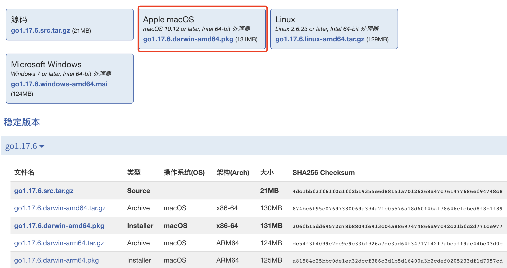
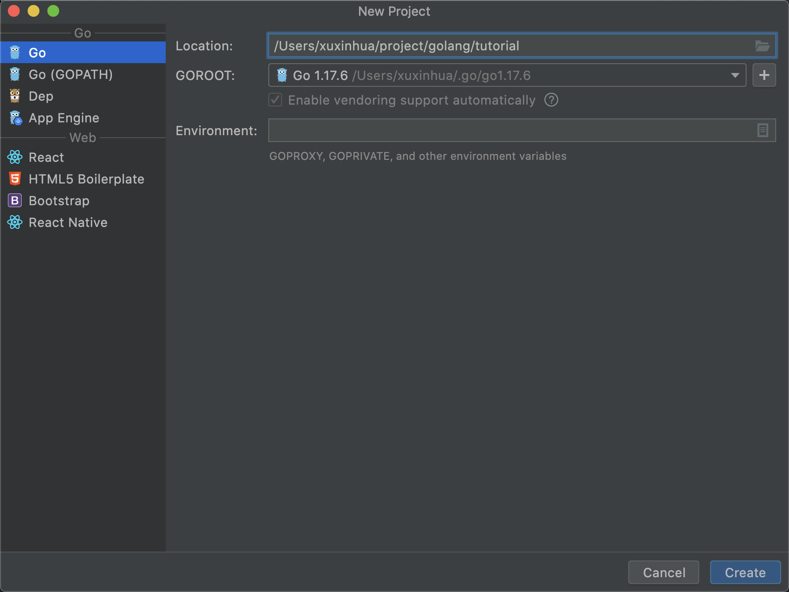
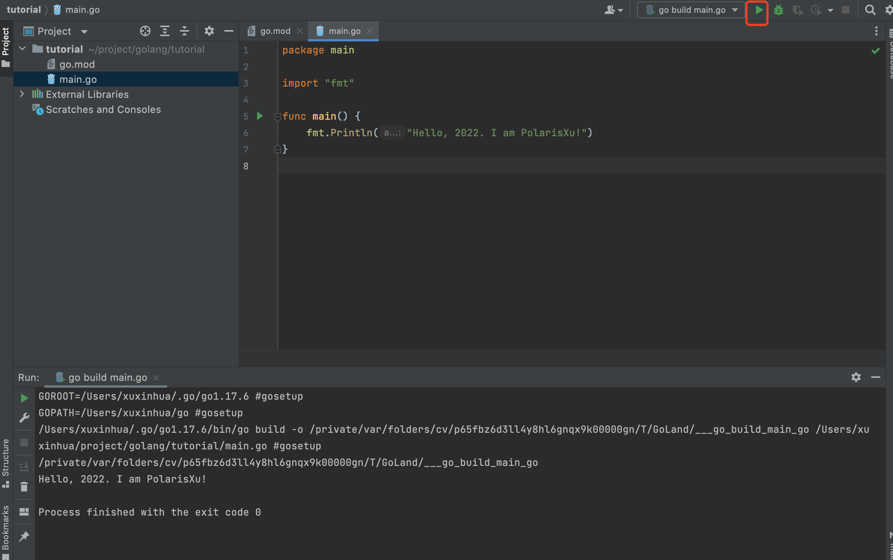
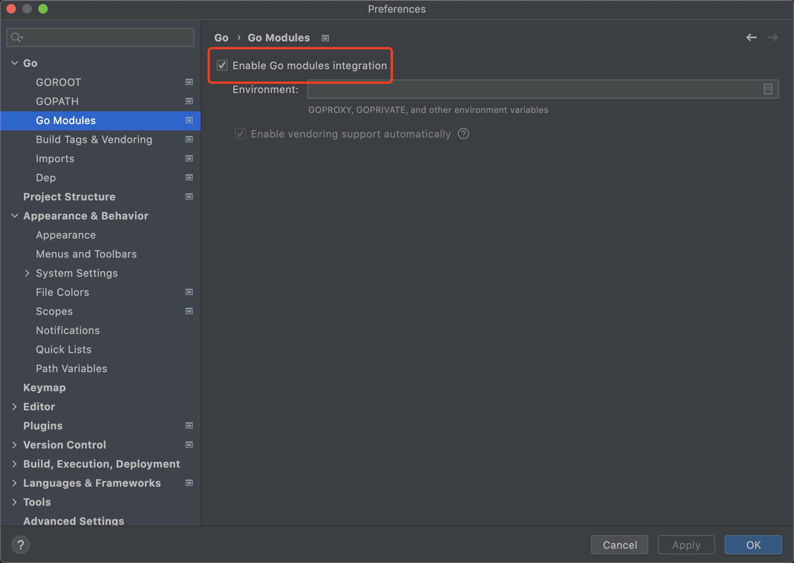

「2022 版」轻松搞定 Go 开发环境
大家好，我是 polarisxu。
实话说，这个时候还写这么基础的文章，感觉有点太 low？但几乎每天有人开始学习 Go，那自然绕不开搭建 Go 开发环境。很多人会通过搜索网上的教程来照着做，于是发现搞不定，原因是找到的教程大部分比较老旧，都是基于 GOPATH 的。隔段时间我就会看到有人问类似的问题，所以才决定写一篇 2022 版 Go 开发环境搭建。
提醒一句，入门教程涉及到代码放入 src 目录下的，基本是基于 GOPATH 的教程，请忽略。
1、安装 Go
Go 语言支持多平台，因此需要根据你的平台来下载对应的 Go 安装包。本文以当前最新的版本（1.17.6）为例，以 Mac 系统为主讲解。
常规安装
到 https://studygolang.com/dl 下载对应的安装包。

如果你是 M1 之后的 Mac，下载 go1.17.6.darwin-arm64.pkg，否则下载 go1.17.6.darwin-amd64.pkg。之后双击下载的安装包，按提示一步步操作即可。
Windows 安装方式类似，一步步操作即可。
Linux 下，需要解压压缩包，然后将解压后的文件夹移动到 /usr/local/ 目录下。
默认情况下，经过以上操作，Go 安装在了 /usr/local/go 中，可以通过以下命令验证是否安装成功：
$ /usr/local/go/bin/go version
go version go1.17.6 darwin/amd64
如果能正常输出版本信息，表示安装成功了。
你发现没？我没有配置任何环境变量。实际上，Go 默认已经不需要配置任何环境变量了——什么 GOROOT、GOPATH 等都不需要了。
但有一个环境变量需要配置下，那就是 PATH，否则每次都需要指定 /usr/local/go/bin/go 这么长的路径。
打开 ~/.bash_profile，在文末加上以下内容：
export PATH=$PATH:/usr/local/go/bin
然后执行：
$ source ~/.bash_profile
这时在终端直接输入 go verison：
$ go version
go version go1.17.6 darwin/amd64
这就是 PATH 环境变量的作用。
Linux 下配置和 Mac 类似。
Windows 下请查阅配置 PATH 环境变量的方法。
不过，国内特殊的环境，我们还需要做一个重要的配置，那就是 GOPROXY：
$ go env -w GOPROXY=https://goproxy.cn,https://goproxy.io,direct
这样可以方便的下载 golang.org/x 等包，所以，记得执行以上命令。
其他安装方法
以上是常规的安装方法，你也可以通过源码编译安装。不过，我更喜欢通过第三方工具管理 Go，因为可以方便的切换多版本。
具体可以参考我之前写的文章：《终于找到了一款我喜欢的安装和管理 Go 版本的工具》 。
2、使用 GoLand
这是大名鼎鼎的 JB 专门为 Go 语言定制的 IDE，很强大，目前最新稳定版本是 2021.3。
到 https://www.jetbrains.com/zh-cn/go/ 下载 goland-2021.3.3（2022.1.28 日构建 213.6777.51），之后双击安装。打开后看到如下界面：（GoLand 是付费软件，不过可以试用 30 天）
可以看到，GoLand 支持远程开发了，在打开/创建项目之前，可以做一些基本的配置，包括学习 GoLand、安装插件等。如果你不喜欢英文界面，在 Plugins 中可以找到中文界面插件，安装即可（GoLand 现在已经支持本地化，在你打开一个项目时，右下角会有提示，要不要切换到本地语言环境，即不需要手动安装语言包）。（我比较建议直接使用英文版）
我们点击 New Project，创建一个新项目：

一定要选择第一项，而不是 Go（GOPATH），Location 可以选择你喜欢的位置，GOROOT 就是你 Go 安装的位置，GoLand 会自动检测到。
创建后，会创建好项目，里面会有一个 go.mod 文件。这是 Go Module 的依赖管理文件。创建一个文件 main.go，输入以下内容：
package main
import "fmt"
func main() {
fmt.Println("Hello, 2022. I am PolarisXu!")
}
GoLand 默认会自动保存。然后点击运行按钮运行：

还可以 Debug。
对于已经存在的项目，如果发现代码提示、依赖等有问题，打开 GoLand 的「Preferences」，确认有无勾选 Module：

GoLand 是开箱即用的，几乎不需要任何配置就可以愉快的玩耍。
3、使用 VSCode
如果你更喜欢轻量级的文本编辑器，VSCode 会是一个不错的选择。之前我写过一系列关于 VSCode 的文章 ，涉及到关于 VSCode 进行 Go 开发的内容，其中关于 Go 开发环境的配置，主要看这篇：《VSCode 开发 Go 程序也可以和 GoLand 一样强大》 。这里就不重复了。
4、总结
总结一下，如下几个关键步骤：
- 下载安装 Go
- 配置 PATH 环境变量
- 配置 GOPROXY
- 选择 GoLand 或 VSCode 或其他你喜欢的开发工具
Enjoy Coding with Go！